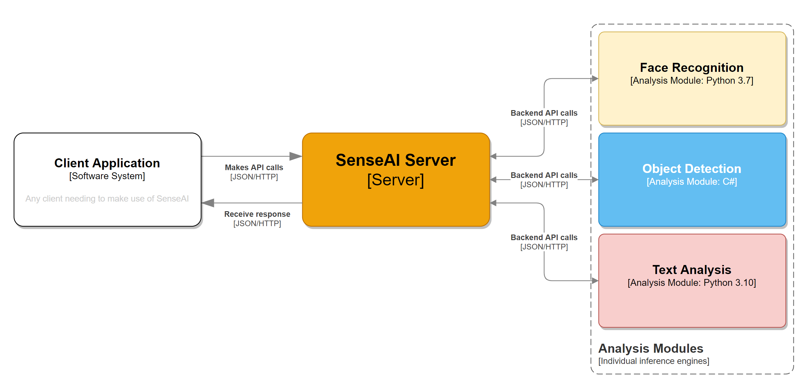
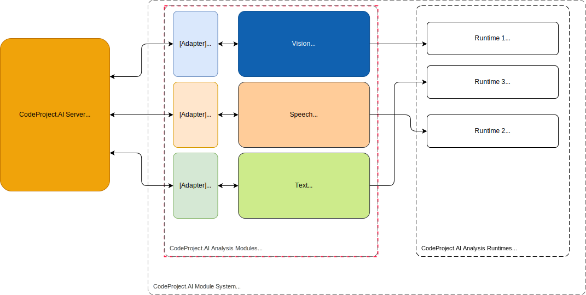

So you want to add new module to CodeProject.AI
CodeProject.AI allows developers to easily add new AI functionality to an existing system without having to fight the tools and libraries
Adding AI capabilities to an app is reasonably straight forward if you're happy to follow the twisty turny maze that is the endless list of libraries, tools, interpreters, package managers and all the other fun stuff that sometimes makes coding about as fun as doing the dishes.
CodeProject.AI makes this easier by providing a framework to manage this pain so you can focus on your code, not the tools.
Aggregating, not adding
We say "add", but "aggregating" is more accurate. There is a ton of amazing AI projects out there being actively developed and improved and we want to allow developers to take these existing, evolving AI modules or applications and drop them into the CodeProject.AI ecosystem with as little fuss as possible. This could mean dropping in a console application, a Python module, or a .NET project.
For development, all you need to do is
- Find or write the code you want to include. This could be a project you find online, a project you've written yourself you wish to include, or you might just start from scratch on a new project.
- Write an adapter that handles communication between the AI code you've written or are including in the module, and the CodeProject.AI server itself.
- Provide a
modulesettings.jsonfile that describes the module and provides instruction to CodeProject.AI on how to launch the module. - Create an install script (usually short) to setup the pre-requisites (download models, install necessary runtimes)
- (Optional but recommended) Create a simple
explore.htmlfile for testing your module, and to provide integration with the CodeProject.AI Explorer - (Optional but recommended) Create a packager so your module can be packaged up and included in the main CodeProject.AI registry.
I just want to code!
If you want to cut to the chase and just get on with writing a module, then read Adding your own Python module or Adding your own .NET module.
The CodeProject.AI architecture in under 30 seconds
CodeProject.AI is an HTTP based REST API server. It's basically just a webserver to which your application sends requests. Those requests are placed on a queue, and the analysis services (aka The Modules) pick requests off the queues they know how to service. Each request is then processed (an AI operation is performed based on the request) and the results are sent back to the API server, which in turn sends it back to the application that made the initial call.
Suppose we had 3 analysis modules, Face recognition using Python 3.7, Object Detection using .NET, and Text Analysis using Python 3.10:

- An application sends a request to the API server
- The API server places the request on the appropriate queue
- The backend modules poll the queue they are interested in, grab a request and process it
- The backend module then sends the result back to the API server
- The API Server then sends the result back to the calling application
The CodeProject.AI API Server runs independently of the calling application.
Think of CodeProject.AI like a database server or any other service you have running in the background: it runs as a service or daemon, you send it commands and it responds with results. You don't sweat the details of how it goes about its business, you just focus on your application's core business.
How Modules Work
Here's a complicated diagram explaining the modules

From left to right:
- We have the CodeProject.AI Server that starts up and monitors the analysis modules
-
We have a set of analysis modules that take requests from the CodeProject.AI Server's queues and process them. Each module consists of
- An adapter which provides the communication between the module and the CodeProject.AI server,
- The module itself.
-
We have a number of runtimes (eg Python or .NET) that the modules run under. Multiple modules can share a given runtime: we don't (yet) sandbox.
The adapter for each module typically runs in the same runtime (and often within the same process) as the module, but this isn't required. You could easily write a simple Python script to act as an adapter that sends and receives data from a .NET module.
Setting up: models and runtimes
The setup script should take care of downloading an AI models that are needed as well as installing any necessary runtimes. By default we currently ensure Python 3.7 and 3.9, as well as .NET 7 are installed and available to all.
For Python modules the setup script would typically also ensure any Python packages are installed.
A Windows BAT file and a Linux/macOS bash file should be provided for setup, depending on which platforms you're supporting.
Choosing the code to add
When thinking about what modules are suitable to include in CodeProject.AI, consider the following:
- Is the code self contained? The less baggage a module needs to drag along the better
- Does the module provide a simple, easily callable API? For instance a Python module may provide a function you call, or a Go application may provide a simple console app experience that allows it to be called from the command line.
- Can the module run offline? A module that requires an internet connection may simply not work in all envuironments, or may not be acceptable to some users who need to ensure their data stays within their environment
- If the module is updated, how hard will it be to drop in the updated code? The less modifications you make to the original code, the easier it is to update the module later. Confine, if possible, your code changes to your adapter
Writing an Adapter
The adapter for a module has one task: to shuttle communications between CodeProject.AI and the module.
An example could be a module written in Python. You have your my_module.py file that contains your
AI inference code, and within that module might be a method predict. The adapter would
- Setup the module by querying the environment variables or checking the values modulesettings.json files
- Process requests (in our case, call the
predictmethod in our my_module.py file) and return the result
If at all possible one should avoid modifying the module's code. The adapter abstracts the module from CodeProject.AI, so if the module is updated, the updates can be dropped in and the adapter will (hopefully) still work. If not, adjusting the adapter to cater for a changed API, data format or method signature should be a quick and easy fix.
The modulesettings.json file
The CodeProject.AI Server, on startup, will load the modulesettings.json file
and its variants in the module's directory. The files are read by the NET Configuration system
in the following order:
- modulesettings.json - common and default configuration values
- modulesettings.<production|development>.json - production or development values
- modulesettings.<platform>.json - values specific to the runtime OS (platform).
Currently supported are:
windows,linux,docker,macosandmacos-arm. - modulesettings.<platform>.<production|development>.json - values specific to a platform and environment.
The settings in each file will override any previously loaded settings, allowing you to specify, in each variant, only the settings you need to adjust for the given scenario.
The modulesettings.json schema
The modulesettings.json file defines the common metadata for the module in a Modules section.
This metadata include information about
- A name and description for the module,
- Whether it should be run at startup,
- How the modules should be started.
a. Specify a
runtimeand afilePath. This will then launch the module specified in the filepath using the given runtime. Currently supported runtimes includedotnet,python37,python38, andpython39. Adding more Python runtimes is trivial. b. Alternatively, specify a full command to run in order to start the module. - A list of the Platorms that the module can be run under. Currently supported include
windows,linux,docker,macosandmacos-arm. - The name of the queue the module will process. This can be any name the module desires to use.
- The endpoints, (
RouteMaps), that the CodeProject.AI Server will expose for this module. For example the endpoint could be a GET call toimage/detect_animals, which would map to GET: localhost:32168/v1/image/detect_animal. The inputs and outputs for this endopoint are also included here, but are used solely for documentation.
An example would be
{
"Modules": {
"PortraitFilter": {
"Name": "Portrait Filter",
"Version": "1.0.0",
"PublishingInfo" : {
"Description": "Provides a depth-of-field (bokeh) effect on images. Great for selfies.",
"Category": "Image Processing"
},
"LaunchSettings": {
"AutoStart": true,
"FilePath": "PortraitFilter.exe",
"Runtime": "dotnet"
},
"EnvironmentVariables": {
},
"GpuOptions" : {
"InstallGPU": true,
"EnableGPU": true
},
"InstallOptions" : {
"Platforms": [ "windows" ], // errors with Microsoft.ML.OnnxRuntime.NativeMethods in macOS, and System.Drawing issues in Linux
"ModuleReleases": [ // Which server version is compatible with each version of this module.
{ "ModuleVersion": "1.0", "ServerVersionRange": [ "2.5.0", "" ], "ReleaseDate": "2022-06-01" }
]
},
"RouteMaps": [
{
"Name": "Portrait Filter",
"Route": "image/portraitfilter",
"Method": "POST",
"Command": "filter",
"Description": "Blurs the background behind the main subjects in an image.",
"Inputs": [
{
"Name": "image",
"Type": "File",
"Description": "The image to be filtered."
},
{
"Name": "strength",
"Type": "Float",
"Description": "How much to blur the background (0.0 - 1.0).",
"MinValue": 0.0,
"MaxValue": 1.0,
"DefaultValue": 0.5
}
],
"Outputs": [
{
"Name": "success",
"Type": "Boolean",
"Description": "True if successful."
},
{
"Name": "filtered_image",
"Type": "Base64ImageData",
"Description": "The base64 encoded image that has had its background blurred."
}
]
}
]
}
}
}